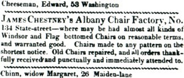

by
Stefan Bielinski
Spelled and referred to variously, James Chestney (aka Mc Chesney) was a chairmaker and businessman who lived in Albany during the 1780s and afterward. He was born in 1751 or 1752. Perhaps he was the son of Alexander and Jane Mc Molly Chesney.
By the 1780s, he had married Cornelia Dunbar. Their children were baptized in the Albany Presbyterian church where he was a member and onetime deacon.
James Chestney first lived in Albany's third ward. His middling household along North Market Street was listed on the census in 1790. By 1800, he had relocated across town to a home on the State Street hill.  By 1813, he was identified as a merchant and chairmaker at 134 State Street. His enterprise there later known as the Albany Chair Factory became an Albany landmark. During that time, he was a prominent member of the Albany Mechanics Society. In 1822, he moved the business down the hill to 96 State Steet. Chestney acquired additional properties in the more newly developed parts of the first ward.
James Chestney lost his wife in 1826. By that time, he was in his seventies and soon moved west on Washington Avenue. He died in June 1847 at the age of ninety-six and was buried in the recently opened Albany Rural Cemetery. His will passed probate in 1863.
notes
 Sources: The life of James Chestney/Chesney/Mc
Chestney is CAP biography number 7597. This
profile is derived chiefly from family
and community-based resources. We seek more
definitive information on his origins and path to Albany. An excellent compilation of genealogical
information by Charles Mudd is available online!
We doubt that this individual is the James W. Chestney who made and repaired
chairs in Saratoga after 1825 - but perhaps a kinsman.
Sources: The life of James Chestney/Chesney/Mc
Chestney is CAP biography number 7597. This
profile is derived chiefly from family
and community-based resources. We seek more
definitive information on his origins and path to Albany. An excellent compilation of genealogical
information by Charles Mudd is available online!
We doubt that this individual is the James W. Chestney who made and repaired
chairs in Saratoga after 1825 - but perhaps a kinsman.
first posted: 05/20/03; revised 9/11/11; updated 1/11/12